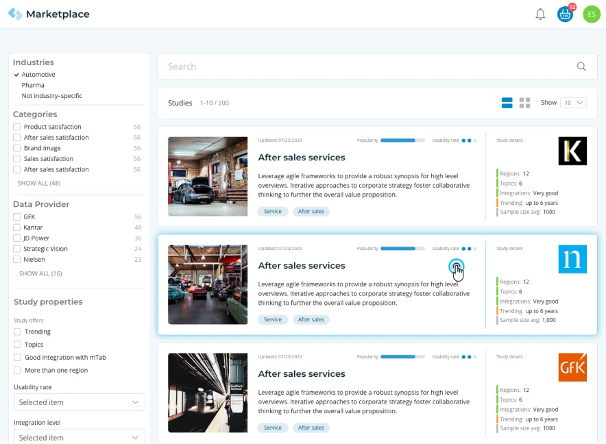
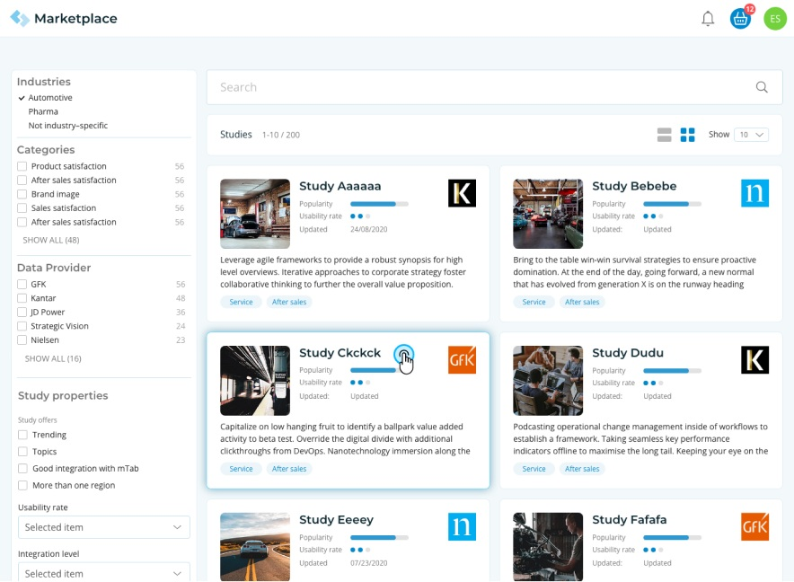
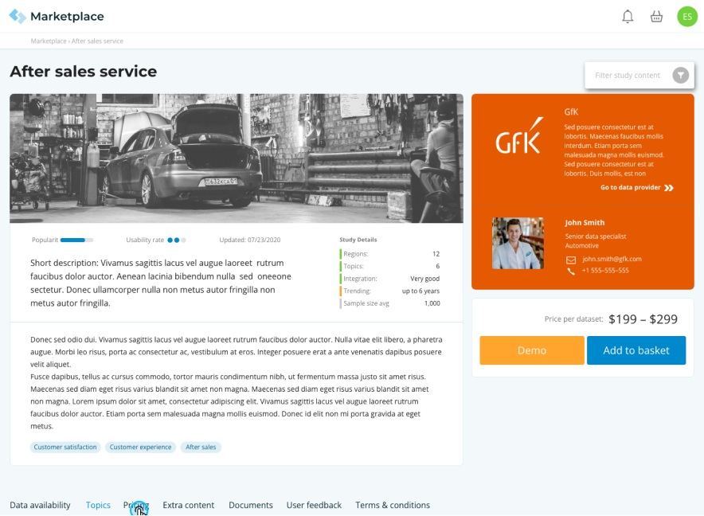
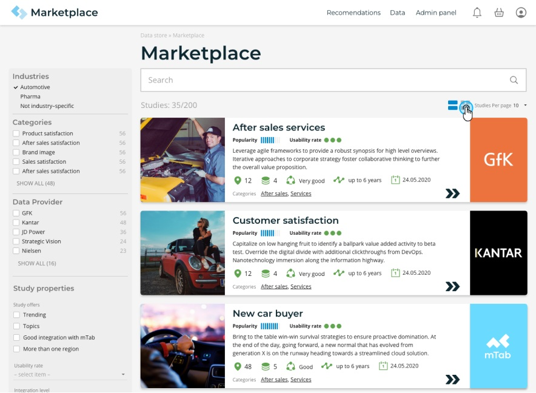
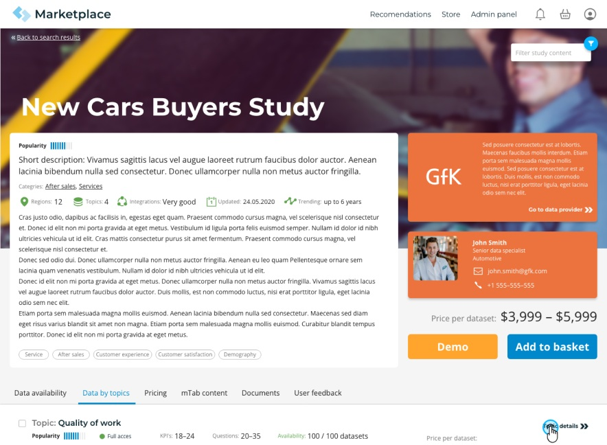
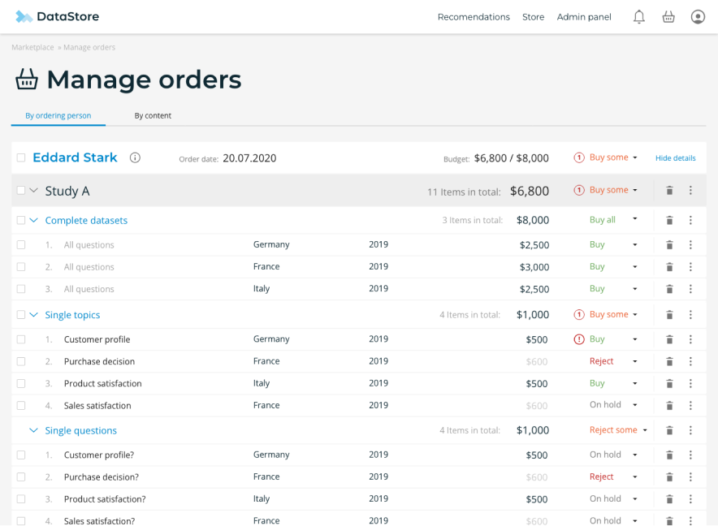

Marketplace
Bringing self-service commerce to enterprise research data
Overview
Halo Marketplace is mTab's two-sided e-commerce platform that connects research data providers with enterprise buyers. Users can discover, purchase, and instantly start analysing research datasets and reports — all within the Halo ecosystem. As Head of Design, I led the overall UX concept and strategy, and designed the complete experience across all three sides: the buyer-facing storefront, the provider/seller tools, and the admin management panel. This was a greenfield project built from scratch.



Challenge
mTab needed a way to bring research content to its users without lengthy procurement cycles. The platform had powerful analytical tools, but no built-in way to discover and acquire new data. We needed to design a marketplace that served two very different audiences — enterprise buyers who expected a simple, familiar shopping experience, and data providers who needed tools to manage listings, pricing, and fulfilment. The experience had to feel as straightforward as any consumer e-commerce site, while handling the complexity of enterprise procurement workflows, multiple payment methods, and different fulfilment models.
Approach
I oversaw the design the end-to-end experience across all sides of the platform.
For buyers, I created a browsable, filterable catalogue with a familiar cart-and-checkout flow — making it easy to find, evaluate, and purchase research content in minutes.
For providers, I designed listing management and order tracking tools that let them publish offers and monitor transactions.
For administrators, I built a management panel for catalogue curation, provider relationships, and transaction oversight.
Throughout, the key principle was reducing friction — purchased data appear immediately in Halo, reports open directly in the viewer, and everything surfaces in the Halo home portal feed.
Outcome
The Marketplace launched as a fully functional e-commerce platform within Halo, giving enterprise buyers self-service access to research data and giving providers a new distribution channel with built-in analytics infrastructure.


